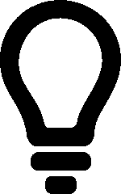

<!DOCTYPE html>
<html lang="pt-br">
<head>
    <meta charset="UTF-8">
    <meta name="viewport" content="width=device-width, initial-scale=1.0">
    <title>Eddias</title>
    <!-- <link rel="stylesheet" href="css/style.css"> -->
    <link rel="shortcut icon" href="img/logo-coruja.ico" type="image/x-icon">
    <link href='https://unpkg.com/boxicons@2.1.4/css/boxicons.min.css' rel='stylesheet'>
    <link rel="stylesheet" href="https://cdn.jsdelivr.net/npm/bootstrap@5.3.3/dist/css/bootstrap.min.css">
    <style>
        *, *:before, *:after
        box-sizing: border-box
        margin: 0
        padding: 0
        .demo-container
        width: 100vw
        height: 100vh
        display: flex
        align-items: center
        justify-content: center
        background-image: radial-gradient(farthest-corner at 50%,  white, #67989A)
        .button, .soc-but
        width: 7rem
        height: 7rem
        .button
        background: #042037
        position: relative
        perspective: 300px
        display: flex
        align-items: center
        justify-content: center
        font-size: 4rem
        color: white
        &:hover .fb
            transform: rotateY(180deg)
        &:hover .tw
            transform: rotateY(-180deg)
        &:hover .gp
            transform: rotateX(180deg)
        &:hover .vk
            transform: rotateX(-180deg)
        .soc-but
        position: absolute
        left: 0
        top: 0
        transition: transform 0.4s ease
        transform-style: preserve-3d
        .back
        width: 100%
        height: 100%
        backface-visibility: hidden
        display: flex
        align-items: center
        justify-content: center
        font-size: 3.5rem
        color: white
        text-decoration: none
        .vk .back, .gp .back
        transform: rotateX(180deg)
        .tw .back, .fb .back
        transform: rotateY(180deg)
        .fb .back
        background: #3b5998
        .vk .back
        background: #45668e
        .tw .back
        background: #00aced
        .gp .back
        background: #dd4b39
        .fb, .vk
        transform-origin: 0% 0%
        .gp, .tw
        transform-origin: 100% 100%
        .tw
        transition-delay: 0.1s
        transform: rotateY(-90deg)
        .gp
        transition-delay: 0.2s
        transform: rotateX(90deg)
        .vk
        transform: rotateX(-90deg)
        .fb
        transition-delay: 0.3s
        transform: rotateY(90deg)
    </style>
</head>
<body>
    <div class="demo-container">
        <div class="button">
            <i class="fa fa-share-alt"></i>
            <div class="fb soc-but">
                <a href="" class="back">
                    <i class="fa fa-facebook"></i>
                </a>
            </div>
            <div class="tw soc-but">
                <a href="" class="back">
                    <i class="fa fa-twitter"></i>
                </a>
            </div>
            <div class="gp soc-but">
                <a href="" class="back">
                    <i class="fa fa-google-plus"></i>
                </a>
            </div>
            <div class="vk soc-buy">
                <a href="" class="back">
                    <i class="fa fa-vk"></i>
                </a>
            </div>
        </div>
    </div>
    <!-- <button type="button" onclick="Share()"><i class='bx bx-share-alt'></i></button>
    <div id="share">
        
        
        
        
        
        
    </div>
    <script src="js/share.js"></script> -->
</body>
</html>